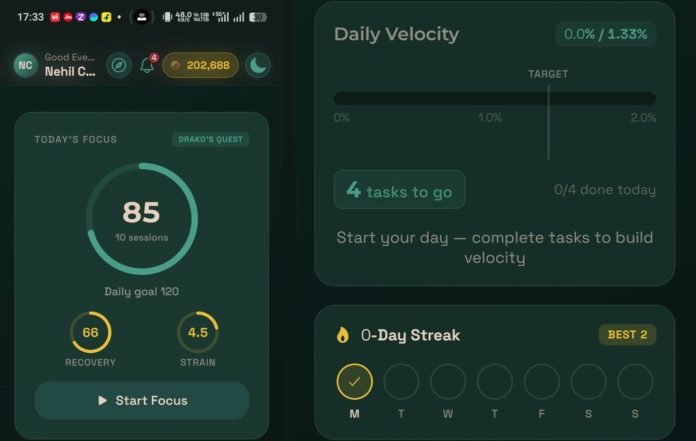
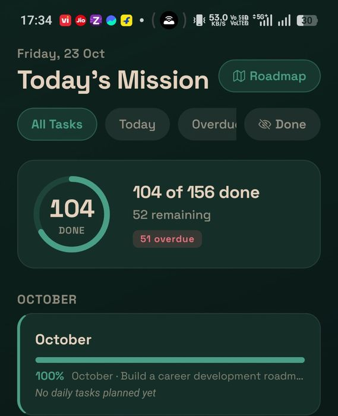
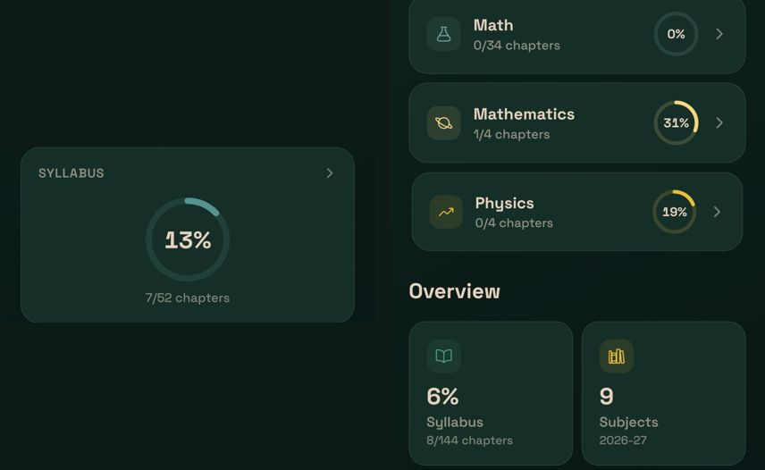
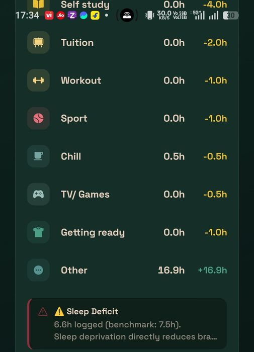

Shaibaz Shaikh · Assignment submission · Team: me + 1 full-stack engineer (FSE) + 1 process/systems designer (SD) · Start date 1 Nov 2026
Sequencing logic: revenue visibility first (it funds everything and its data sources are clean APIs), adoption experiments in parallel (they need a baseline only, not the warehouse), then the student dashboard (it depends on app events and the habits we build during the adoption sprints).
| Workstream | Wk 1 1–7 Nov | Wk 2 8–14 | Wk 3 15–21 | Wk 4 22–28 | Wk 5 29 Nov–5 Dec | Wk 6 6–12 Dec |
|---|---|---|---|---|---|---|
| A. Data spine schema, event tracking, n8n error handling | FSE: Supabase + app events SD: ClickUp status map | FSE: flows 01–04, 08 | ||||
| B. GTM tracker | Me: metric dictionary, targets | SD: Razorpay product codes, invoice SOP | Me + FSE: dashboard live, RCA rules | Weekly review ritual starts | ||
| C. App adoption | Me: 6 student + 3 parent calls, app teardown | Me: experiment briefs SD: dormant-7 win-back | FSE: Sprint 1 (quiz in-app, focus→chapter) | Readout 1 | FSE: Sprint 2 (Realm gating, Home cleanup) | Readout 2 |
| D. Student dashboard | SD: advisor workflow, rating prompt spec | FSE: flows 05–07, wearables | Me: KPI QA vs ClickUp history | Live for weekly review | ||
| E. Delivery OS | Me: brief template, rituals | runs | runs | runs | runs | Retro + v2 |
| Person | Time split | Owns |
|---|---|---|
| Me | 40% adoption · 25% analytics · 20% delivery OS · 15% stakeholder/reviews | Problem framing, metric definitions, experiment design, readouts, acceptance of every build, founder updates |
| Full-stack engineer | 45% data spine + dashboards · 55% app sprints | Supabase, n8n flows, app tracking, in-app quiz, focus/Realm changes, wearable sync |
| Systems designer (commerce) | 50% GTM process · 50% student ops process | ClickUp pipeline and status contract, Razorpay invoicing rules, advisor SOPs, alert escalation rules, data-entry cadence |
Why this split: the FSE is the constraint, so their time goes only to things that remove manual work or change student behaviour. Process work the SD can do in ClickUp and Razorpay settings never goes to the FSE's queue.
30 minutes a day of screen time in a study app can be hit by a game loop alone, which helps no parent. I'd propose a north star of focus-minutes per active student per day (target 45), where each focus session is attached to a chapter or task. Because focus sessions run inside the app, hitting 45 focus minutes delivers the 30-minute app-time goal as a by-product, honestly.
Input metrics: weekly active students (target 18 of 20), % of days with the 8 PM quiz done in-app, % of focus sessions linked to a chapter, and the count of chapters moving up a rigour stage per week.




| # | Bet | Why I believe it | Success / kill rule (day 14) |
|---|---|---|---|
| 1 | Move the 8 PM quiz into the app as a Home card with a push at 7:55 PM and coin reward | Alcovia already runs this ritual daily, outside the app. It's a ready-made daily reason to open the app. | ≥60% of active students do it in-app 5 of 7 days. Kill: <30%. |
| 2 | Focus session must pick a chapter; completing it advances the chapter's rigour stage and hatches the egg | Focus already pays the game (eggs). Linking it to a chapter makes the study data come free and gives Syllabus a reason to exist. | ≥70% of sessions chapter-linked; focus min/day +50% vs baseline. |
| 3 | Realm territory only via focus; advisor tasks appear as Side Quests with coins | Realm is the strongest pull. Gating it on study converts existing attention instead of inventing new. | Realm users keep ≥90% retention; quest completion ≥50%. |
| 4 | Cut cognitive load: hide Rankings, Wellness league and Streak-as-separate-feature; Home shows 3 cards (today's quiz, next task, focus) | 25 features for 20 students. Features with 1 user add noise. Revisit Wellness once ≥5 wearables are connected. | Time-to-first-action on Home under 10 s; no drop in Realm usage. |
| 5 | Win back the 7 dormant: advisor call + parent WhatsApp with the teen's own progress card | Dormant users won't see in-app changes. A human touch is cheaper than any feature. | ≥4 of 7 active again within 10 days. |
| 6 | Focus Lock (whitelisted calls only): Android Lock Task mode first, iOS Screen Time API (FamilyControls) second | Asked for in the brief and the strongest parent-facing proof. Larger build, so it goes after bets 1–3 prove the loop. | Spec in week 4, build in Jan, after readout 2. |
Every tile and table changes with the timeline selector and maps to a numbered query in sql/gtm_metrics.sql.
| Block | What it shows | Source → automation |
|---|---|---|
| Revenue | Target vs achieved (prorated to window), trial vs full program, students onboarded, trial→full conversions, workshop revenue per fortnightly session, program vs workshop share | Razorpay webhook → flow 01. Every invoice/payment link carries notes.product_code and workshop_id, so revenue is classified at source (the SD's SOP). |
| Receivables | Invoices generated but unpaid, with ageing; trial renewals due in 30 days, ranked by risk (app usage + attendance) | Flow 09 runs the renewal pipeline: T-21 progress report, T-14 advisor call task, T-7 invoice. |
| Funnel | Lead → qualified → discovery set → attended (show-up rate) → ambition interview → architect (drop-off) → signed; CPQL, conversion %, organic count, average journey days | ClickUp status change → flow 03 writes a stage event. Smallest.ai reminders on discovery/interview; outcomes logged by flow 04. |
| Campaigns | CTR per creative (top and refresh lists), CPL, 7-day frequency with a ≥3 flag, landing pages (bounce, form drop-off, load time) | Meta Insights API daily → flow 02, which auto-opens a "refresh creative" ClickUp task at freq ≥3. |
| RCA | Per campaign: Scale / Refresh / Hold / Drop | Rule set below, computed in SQL so the decision is consistent week to week. |
RCA rules. Scale (+20–30% budget) if CPQL ≤ 80% of average, ≥1 sign-up and frequency < 3. Refresh if frequency ≥ 3 or CTR < 70% of average. Drop if CPQL > 150% of average with zero sign-ups. Otherwise Hold. Judged on CPQL and sign-ups, not CPL, because cheap unqualified leads waste advisor hours on discovery calls.
Where it lives: production version on Metabase (open source, free) connected read-only to Supabase, embedded as a ClickUp view so the team doesn't open a new tool. Reviewed every Monday in a 20-minute GTM huddle.
The failure pattern I'd design against: features ship, nobody checks whether they moved anything, and the next feature starts. Every OKR, whether an app feature, an automation or an analytics upload, goes through the same seven steps.
It replaces the weekly doc and scattered ClickUp folders with one board, sorted worst-first so the weekly review starts with the teens who need help. It has a cohort view and a single-student drill-down.
| Level | Q1 Quantity: did we conduct it? | Q2 Quality: did they like it? | Q3 Performance: how did they do? |
|---|---|---|---|
| Day | Quiz run each day; timetable published for each teen | Quiz participation trend (proxy for interest) | Focus min/day, timetable adherence (done ÷ planned self-study), quiz score, active minutes, sleep and recovery |
| Week (academic) | Academic sessions 1 and 2 held; monthly syllabus re-evaluation done | Session rating | Task completion, deadline adherence, time-estimate accuracy, chapter readiness score, syllabus pace vs 25%/quarter, exam score vs target |
| Month | Workshops, pod, peer, mentor call, branding shoot: held vs planned | Rating, NPS, rating response rate | Attendance; soft-skill delta across 11 skills; mentor → career roadmap step; clips published |
| Quarter | Podcast, competition prep, parent-child, out-of-city, theme project held | Teen NPS; parent NPS for the parent-child workshop | Episode published, competition placement, theme milestones; roadmap hit-rate (career binary, personal monthly, academic) |
Health score (weekly, per teen): 35% academics, 25% focus, 20% attendance, 10% quiz, 10% recovery. Red <50, amber 50–70, green >70. It is a triage tool, not a grade; the weights get revisited after 4 weeks against advisor judgement.
| Data | How it arrives | Human effort |
|---|---|---|
| Focus, tasks, chapter stages, app use | App DB → nightly sync (flow 06) | None |
| Quiz | Google Form auto-graded (flow 05) now; in-app later | None |
| Wearables | HealthKit / Health Connect via the app; WHOOP and Garmin APIs nightly | One-time connect |
| Session attendance and rating | Push after each session: 1-tap 1–5 stars + optional NPS | Teen: 3 seconds |
| Soft skills | Facilitator form per workshop (11 sliders per group) | ~5 min per workshop |
| Exam marks, targets | Advisor enters once per exam in the app | Once per exam cycle |
Flow 07 checks every night for missed deadlines, rigour lag and 3 days without focus, then sends one grouped nudge per teen: to the teen and advisor first, and to the parent only on a repeat breach within 7 days. A gap of more than 10 points to the exam target triggers the pre-agreed tutor-support step.
Advisors aren't subject experts, so they own the process, not the content: setting targets from the affinity × ability matrix, enforcing the 5-stage rigour (read → notes → practice ≥70% → timed past papers → ≥80% ready), protecting self-study slots in the timetable, and escalating to a tutor when the data says so. The dashboard gives them exactly those levers and nothing that needs subject knowledge.
Where and when: Metabase on the same warehouse, embedded in ClickUp, live for the weekly review by 12 Dec (weeks 3–6 above). A monthly parent progress card is generated from the same data.
schema/schema.sql (warehouse), sql/gtm_metrics.sql, sql/student_metrics.sql, n8n/01–09 (importable workflow JSONs), site/ (dashboards and this write-up).